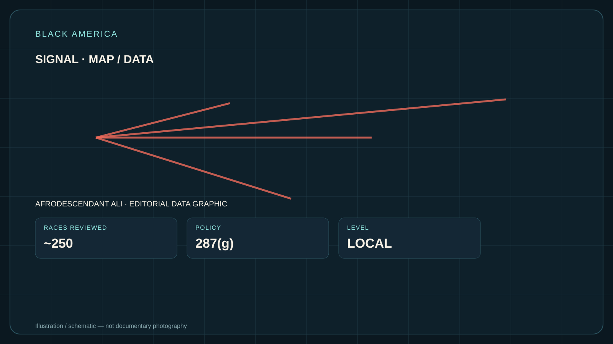

Sheriff elections put local immigration agreements in focus
An AP review of roughly 250 sheriff races examined where 287(g) agreements featured in campaigns; official and local results show the issue’s local political stakes.

What We Know
The Associated Press reviewed roughly 250 2026 sheriff races involving 287(g) agreements and examined contests where cooperation with federal immigration enforcement was part of the campaign context.
Local results
Maryland’s official 2026 returns list Bickel with 67,164 votes and Jenkins with 45,939 in the contest reported in the research record. WUNC reported that Shannon Long defeated incumbent Terry Johnson in Alamance County, where the 287(g) programme was part of the local political debate.
Why It Matters
Sheriffs operate through local offices with discretion over cooperation and enforcement priorities. The results show political contestation around those choices, but they do not prove immigration policy alone determined any one outcome.
What We’re Watching
County-level results, incoming sheriffs’ stated policies, the status of local 287(g) agreements and the practical effects on residents, families and county services.